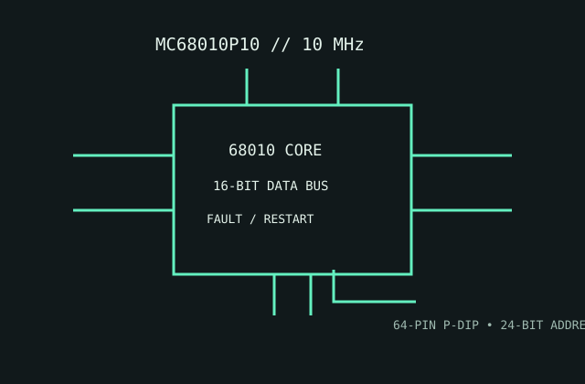

[ MOTOROLA 68000 FAMILY // VIRTUAL-MEMORY ENHANCEMENTS ]
Motorola MC68010P10
A 10 MHz 68010 implementation adding restartable bus faults and processor-state support useful to virtual-memory operating systems.

MODEL IDENTIFICATION: MC68010P10, 10 MHz plastic DIP variant. Match the exact board footprint and bus protocol; a shared 68000 family name does not guarantee substitution.
Recorded specifications
| Model | MC68010P10. |
|---|---|
| Generation | Second-generation 68000 family, introduced in the early 1980s. |
| Architecture / cores | Motorola 68000-compatible 16/32-bit CISC architecture; one CPU core. |
| Frequency / cache | 10 MHz speed grade; no on-chip instruction or data cache. |
| Package / socket | 64-pin plastic DIP (P-DIP) ordering package; use the matching 64-pin socket or board footprint. |
| Power | 5 V nominal supply. No modern TDP rating; use the data sheet's maximum supply-current and dissipation limits for the actual clock grade. |
| Memory / bus | 16-bit external data bus and 24-bit physical addressing; external RAM and any system MMU are board-level components. |
| Board compatibility | Designed for MC68010 bus timing and the P-DIP pinout. Some 68000 boards can be adapted, but check function-code signals, bus-error/retry behavior, reset and memory management support. |
Compatibility notes
- The 68010's restartable bus-cycle behavior is useful only if the board and operating system support it.
- Verify the actual device marking and board revision; do not install into a socket based only on visual similarity to another DIP CPU.
- Follow Motorola's electrical limits and the board schematic for power-up and external memory timing.
Sources & further reading
- Motorola MC68010/MC68012 data sheet (Bitsavers technical archive)Manufacturer data sheet archive for device grades, package and electrical values.
- Motorola application report AR209: Virtual Memory and the MC68010Contemporary Motorola system-design reference archived by Bitsavers.